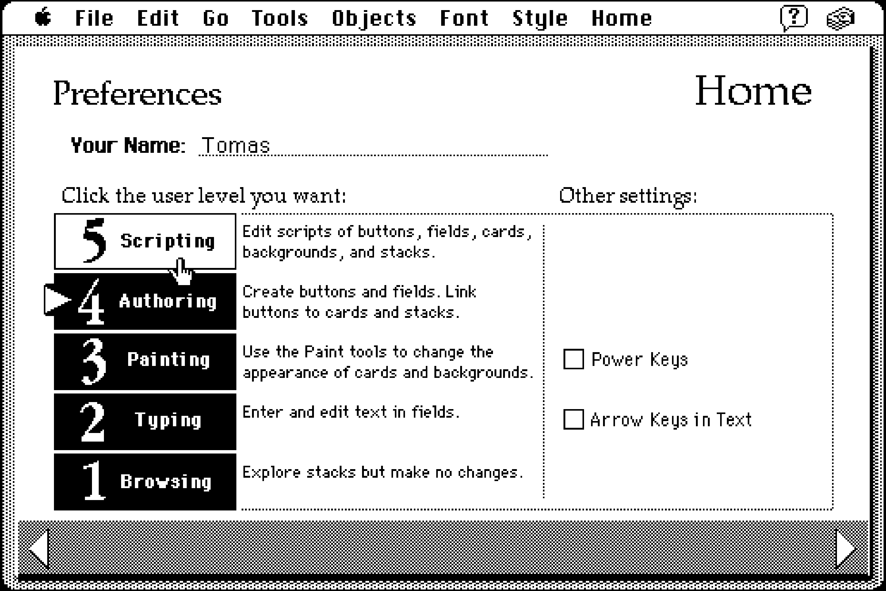
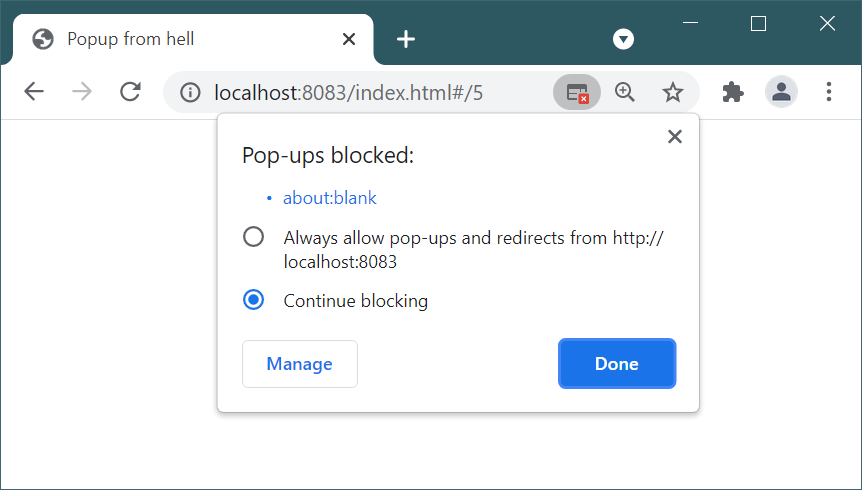
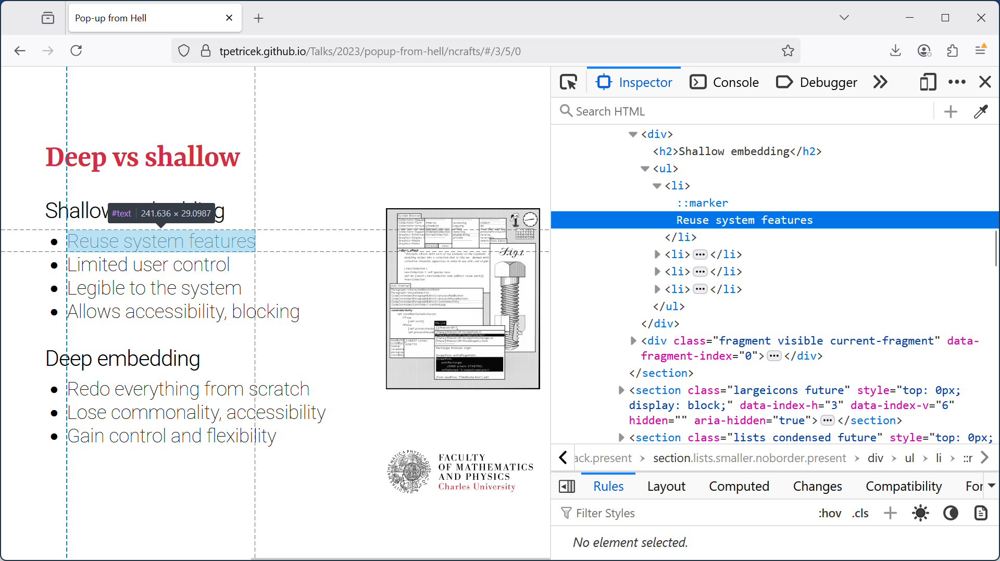
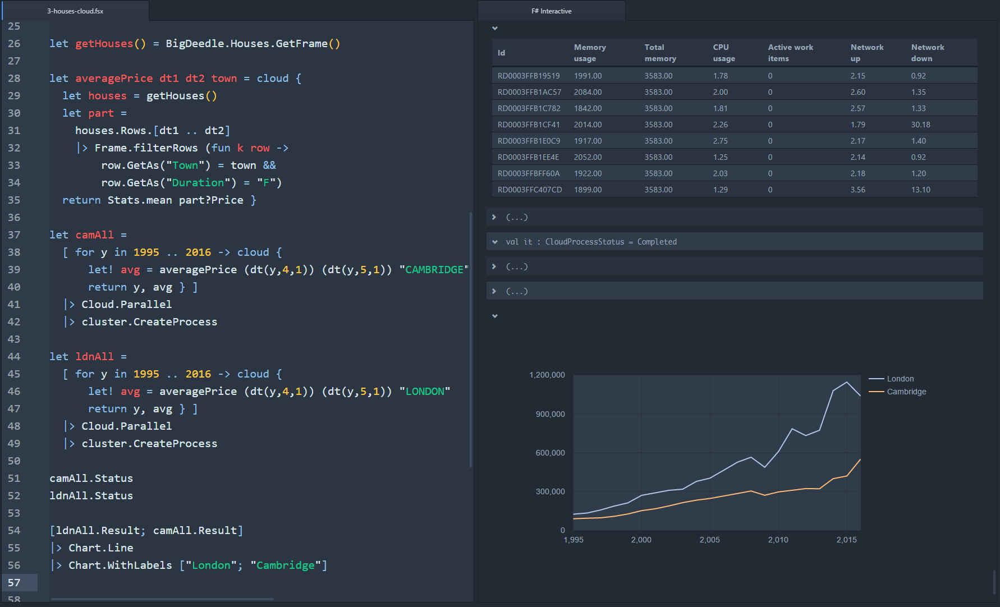
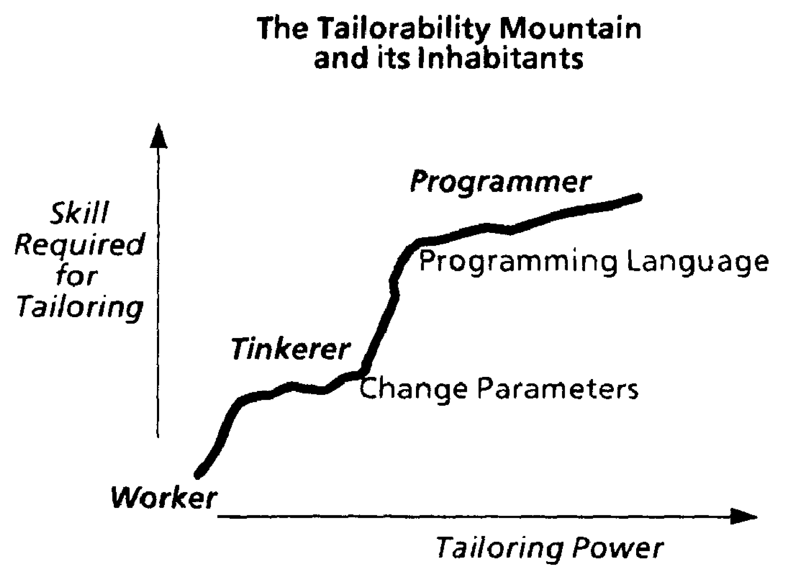

TODO
Table of Contents
Introduction
Most software that is built today is a black box. What the users of the software can do is determined by the software design and the decisions of its designers and programmers remain hidden in the program source code. In most cases, users do not have access to the source code.11 A typical situation with online services and apps including, for example, social networks and AI chatbots. Even when the source code is available,22 In case of open-source software such as the Linux operating system, the Firefox web browser or the LibreOffice office suite. its complexity and structure makes it practically impossible for most users to answer questions about the inner workings of the software.
The black box nature of software has wide-ranging consequences. It means that end-users have no way of finding out why they are seeing particular results when using the software and how those results were obtained. For example, they cannot find out why they are seeing a specific advertisement on social media and they have no way of adapting software to suit their accessibility needs. There are numerous attempts to address those limitations. Work on explainable AI33 See for example review by Dwivedi et al. (2023). aims to make artificial intelligence models more transparent, enabling architecture44 Clark (2014) imagines Global Public Inclusive Infrastructure that enables personal digital inclusion. supports building of inclusive adaptable applications and malleable software55 Abstractly characterised by Tchernavskij (2019) and illustrated for example by Wildcard (Litt et al., 2020). empowers end-users to modify their software. Despite the virtuous aims of these approaches, they are treating merely the symptoms of a more basic limitation of our present way of engaging with software.
Our relationship with software resembles the troublesome relationship of the society with technical objects that has been studied by Gilbert Simondon in the 1950s.66 His thesis On the Mode of Existence of Technical Objects was published in French in 1958, but the first official English translation only appeared in 2017 (Simondon, 2017). Simondon examined the sources of alienation, arguing that the “most powerful cause of alienation in the contemporary world resides in this misunderstanding of the machine, (...) by the non-knowledge of its nature and its essence.”77 Simondon (2017, p.16) Today, when software is increasingly ingrained in a wide range of aspects of our lives, and our “non-knowledge of its nature and its essence” is ubiquitous, the “most powerful cause of alienation in the contemporary world” may well be the misunderstanding of software. At a time when the society needs to make important decisions about software, the opacity of software prevents us from developing an effective conceptual framework for understanding how software operates. The fact that most software is intentionally built to hide its inner workings is a crucial part of that. As Simondon pointed out already, the “technical objects that produce the greatest alienation are those meant for ignorant users.”88 Simondon (2017, p.255)
The opaque nature of software is not a necessity. The history of programming offers many visions of a more open software. The Free Software movement envisioned software that gives users the freedom to “study how [it] works and adapt it to [their] needs,”99 This particular wording is from the “What is Free Software?” page published on the GNU website in 1997 (Free Software Foundation, 1997), but similar ideas already appear in the first bulletin of the Free Software Foundation (Stallman, 1986). while the creators of the Smalltalk programming language in the 1970s saw their system as “a general purpose meta-medium that anyone can adapt to their particular needs.”1010 Quoted from Kay and Goldberg (1977). The language itself has been described by Goldberg and Robson (1983). See also historical reflections by Kay (1993). Such software could empower users to engage more closely with software and, possibly, also help develop a better understanding of software in the broader society. Yet, despite these appealing visions, often backed by solid engineering developments, opaque software remains the norm.
Understanding how software becomes opaque is the necessary prerequisite for undoing the closing of software. As argued by Federica Frabetti, if we want to tackle the deep opacity1111 Frabetti (2014) adopts the term used by Stiegler (1998) who maintains that “we do not immediately understand what is being played out in technics (...) even though we unceasingly have to make decisions regarding technics the consequences of which are felt to escape us more and more.” of software, we need “to problemaitize the intertwining of the technical and the social aspects of software”1212 Frabetti (2014, p.xix) and question “the conceptual system on which [software] relies for its functioning.”1313 Frabetti (2014, p.xiii) Frabetti does this by critically interrogating “historical-cultural and technical narratives,” including the origins of software engineering and reflections on free and open software. I follow a more historical approach. Taking inspiration from the methodology of critical software studies,1414 The book edited by Fuller (2008) introduces the field; specific approaches include critical code studies (Marino, 2020), studies of singular artifacts such as a BASIC one-liner interrogated by Montfort et al. (2012) or rethinking of the history and origins of software (Sack, 2019). I closely examine two specific historical case studies (§4 and §5) and use them to document how decisions regarding software opacity are made. Before doing so, I review notable past visions of open software (§2) and classify the different notions of software openness that appear in this article (§3).
Visions of open software
Multiple past visions of software included openness as their key component. Many of those visions had a profound impact on the computing industry, but in a remarkable number of cases, the idea of a more open software later got lost.1515 This review is inevitably incomplete. Many more systems would deserve a mention, including Boxer (diSessa and Abelson, 1986), Lisp Machines, Interlisp (Steele and Gabriel, 1996) and Emacs (Stallman, 1981).
Smalltalk
The Smalltalk programming language was envisioned as the software side of the Dynabook, a “personal dynamic medium the size of a notebook which [could] handle virtually all of its owner's information-related needs.”1616 Kay and Goldberg (1977) The language was intended as “a general purpose meta-medium that anyone can adapt to their particular needs.” This means that a “kid may turn [the Dynabook] into a painting system, a musician may turn it into an audio synthesis system and a decision theorist can turn it into an agent-based simulation system.”1717 Petricek (2025)
Openness was a necessary part of the vision, because it enabled users understand how the system works and learn how to modify it:1818 This idea was illustrated in an article presenting Smalltalk in the 1981 issue of the BYTE magazine (Reenskaug, 1981).
The new user of a Smalltalk system is likely to begin by using its ready-made application systems for writing and illustrating documents, for designing aircraft wings, for doing homework, for searching through old court decisions, for composing music, or whatever.
After a while, he may become curious as to how his system works. He should then be able to “open up” the application object on the screen to see its component parts and to find out how they work together.
The next thing the user might want to do is to build new systems similar to the one he has been using. A kit of graphical building blocks would let the user compose a new system (...). Finally, the expert user would want to make his own kits.
Today, Smalltalk is recognized as the first object-oriented programming language. Object-oriented languages like Java adopted many of the Smalltalk language features, but not the openness of the medium. If you have a running Java application, you cannot “open it up” to find out how it works and adapt it.1919 Although the iPad has the form-factor of the Dynabook that Alan Kay envisioned in the 1970s, Kay criticised its closed nature arguing that iPad “could not be farther from the original intention” (Greelish, 2013).
The development through which the open object-orientation of Smalltalk turned into the closed object-orientation of Java has been described as the shift from the humanistic to the engineering culture of programming.2020 (Petricek, 2025) While the former emphasized openness as a value, the latter was concerned with practical engineering issues such as deployment, which was challenging in the original Smalltalk model.2121 The issues with deployment have been listed as one of the possible reasons for the demise of Smalltalk (Bracha, 2020).
Microcomputers
In the 1970s, Smalltalk required an expensive special-purpose hardware that was only available at Xerox PARC. What made computers more widely accessible was a parallel development.2222 This common narrative has been questioned by Rankin (2018), who points out that access to microcomputers was still limited to an elite group and that there were other computer networks based on time-sharing systems at the same time. Microcomputers were a new kind of computers enabled by the development of microprocessors.2323 Advertised as “computer on a chip”. At first, microcomputers were toys for highly technical tinkerers, but they soon became more powerful and user-friendly.
The “1977 trinity,”2424 The term “1977 trinity” only appeared in later written retrospectives. A detailed account of the history of microcomputers has been written by Haigh and Ceruzzi (2021). comprising Commodore PET, Apple II and TRS-80 sold millions of units. The way these microcomputers worked was remarkably close to Alan Kay's vision.2525 Petricek (2025) The machines booted into an interactive BASIC programming prompt and even playing a game involved typing program commands. The code of BASIC programs was accessible to modification and was often copied line-by-line from magazines, exposing regular computer users to programming.2626 Inspired by the complementary science methodology (Chang, 2004), the web-based Commodore 64 BASIC reconstruction (https://tomasp.net/commodore64) documents interesting ways of working of the system that have been lost.
The early open spirit of microcomputers did not last. Developers started creating more sophisticated applications for microcomputers and many of those were not coded in BASIC, but in low-level and more opaque assembly. This was frequently for performance reasons. Many microcomputer users also stopped thinking about them as general-purpose programmable systems, but as devices to run a specific application. As documented by Laine Nooney,2727 Nooney (2023) the Wall Street users referred to Apple II as the “VisiCalc machine,” using the name of an early spreadsheet application, their primary reason for buying the computer.
Free software
A more ideological approach to the openness of software in the Research Laboratory of Electronics (RLE) at MIT in the 1960s. The computer programmers who congregated around the TX-0 and PDP-1 computers developed a set of values that were later referred to as the hacker culture.2828 The term was popularized by Raymond (1999) and Levy (1984). A more critical reflection has recently been written by Tozzi (2017). Hackers believed that access to computers and information should be unlimited. Anyone should be able to look at program source code, learn from it and modify it for their own use.
The values were made more explicit when the Free Software Foundation was established in 1985, possibly in response to the slow demise of the original community of hackers at MIT. The foundation was “dedicated to eliminating restrictions on copying, redistribution, understanding and modification of software.”2929 According to the first bulletin published by the foundation (Stallman, 1986). The word “free” in the name of the organization referred to two essential freedoms that the foundation aimed to promote, “the freedom to copy a program and redistribute it” and “the freedom to change a program.”3030 Stallman (1986) The latter freedom also required that the source code of the program is available to its users. To support the aim, the foundation later created the GPL license, which formalized the requirement. GPL-licensed software must be distributed with source code and anyone who modifies and redistributes it must also share the modified source code.
In principle, sharing the source code provides the user with full access to all information they need to understand how the program works. For the kind of software tools developed as part of the GNU project in the 1980s, the access to source code also allowed their users to “change the program” in practice. However, this was partly because the users were themselves programmers and partly because the complexity of the software tools was limited. The degree to which access to source code enables users to “change a program” today may be questioned. Open source systems like Linux or Firefox are distributed with source code, yet making even a small change to the software, such as changing the text of a menu item, is outside of the reach of a vast majority of their users.
Hypertext and the Web
Another software lineage with its own vision of openness is centered around what later became known as hypertext. The development can be traced to a 1945 essay As We May Think by Vannevar Bush.3131 Bush (1945) In the essay, Bush describes a device for managing information that makes it possible to follow connections between different documents it stores.3232 Writing in 1945, Bush imagined the documents would be stored on microfilms. Bush's essay was influential and later inspired Ted Nelson, who introduced the term `hypertext'. For our discussion about software openness, it is useful to focus on two later instances of the idea, the HyperCard application and the World Wide Web.
HyperCard was built by Bill Atkinson for Apple in 1987. Unlike Smalltalk or GNU, which were programming systems, HyperCard was an end-user application. Users could create “stacks of cards” that contained user interface elements and data. The cards could be linked, so that clicking a button led the viewer to another card and more complex logic could be implemented using scripts. HyperCard had an enthusiastic community of users who used it for a wide range of personal, creative and bussiness projects. Arguably, one of the reasons for its success was its openness. HyperCard made no strict distinction between the stack creator and viewer. Both viewing and editing was done in the same graphical user interface. To edit a stack, the user merely had to switch to a different user level (Figure 1), which added additional controls for modifying the cards.3333 For commercial distribution, it was also possible to lock and password-protect HyperCard stacks to disable editing, but many stacks were available unlocked and unprotected.

Figure 1. HyperCard preferences page, where the user can select a “user level” to change the mode of interaction with a HyperCard program (screenshot by the author)
The design of HyperCard made it easy to copy, study and modify HyperCard stacks obtained from other users and learn how to create new ones. It is worth noting that these characteristics are remarkably similar to the two freedoms required by the Free Software Foundation. I would thus argue that, just like BASIC on microcomputers was an unfaithful, but practical realization of Alan Kay's Smalltalk vision, HyperCard was an unfaithful, but practical realization of free software.
HyperCard stacks existed as local stand-alone files, which made them unsuitable for the 1990s era of the internet. The World Wide Web developed by Tim Berners-Lee was also inspired by hypertext, but focused on sharing of information. Reflecting its academic origins, the web was structured as interconnected set of documents (rather than cards), but the documents also included other interface elements known from HyperCard (like buttons). The fact that documents existed on public web servers, rather than as local files, made editing a trickier problem. Despite some initial attempts, the World Wide Web never allowed users to directly edit documents through the web browser. However, the web remained open in the sense that users could view the source code of a web page, save it locally, or copy parts of it for their own use. As I document later in this article, the openness gradually disappeared. If a user opens a source code of a modern web application, they no longer see comprehensible source code and have little chance to understand what is happening with the data they enter.
What is software openness
Openness has been broadly defined as the “accessibility of knowledge, technology and other resources; the transparency of action; the permeability of organisational structures; and the inclusiveness of participation.”3434 Schlagwein (2017) In the context of software, openness also manifests in different ways. The kind of openness of Free Software differs from that of customizable end-user application such as HyperCard. We can separate the two cases by distinguishing between the static openness of the source code and documents using which software system is produced and the dynamic openness of the resulting running software system.
\paragraph{Static openness} The first kind of openness concerns the source code and other information about software. The concept can be used for making a distinction between proprietary software (information about it is not available) and open source software (the source code is available). Even proprietary software can be closed to a varying degree. For example, different software development methodologies recommend restricting access to particular information to different parts of the development team. The notion is not restricted to source code. For example, an explanation of how a key algorithm of a system operates, or a detailed description of collected data can be shared in an accessible form with end-users.3535 Regulations such as GDPR can thus be seen as requiring a minimal degree of openness of software.
\paragraph{Dynamic openness} The second kind of openness reflects the degree to which the structure of the (running) software system is exposed. An application compiled to native code is dynamically closed as it is difficult to reconstruct any information about its internal structure.3636 As pointed out by Kell (2019), if an application is compiled with suitable debugging information, it should still be possible to reconstruct its structure. Software systems that retain the original static structure are more open. At an extreme end, a running Smalltalk system includes all class definitions with their source code, allowing users to inspect and modify the running program. A more limited case is that of mobile applications that need to access some device resource. The application needs to declare the required permissions, which reveals (very little) information about its inner working.
\paragraph{Software opacity} The two kinds of openness both contribute to the opacity of the software we use today. If we face software that is both statically and dynamically closed, we have no way of understanding how it operates. Dynamic openness makes software more transparent to its end-users, while static openness serves primarily programmers. In an open software system like Smalltalk the two notions partly overlap, because source code becomes a part of the running system.
Each of the following two case studies focuses on one of these kinds. The discussion of information sharing (§4) is primarily concerned with static openness, while the study of the web (§5) emphasises dynamic openness. As we will see, the decision making that is involved in choosing whether to make a software system more open or more closed is very similar for both kinds of openness.
Information sharing
Information hiding is a fundamental concept in computer science. Every student is taught to design software in a way that hides the implementation details of a module, exposing only a well-defined stable interface. The principle makes software more closed, but is accepted as a good engineering principle. In the first case study, I retrace the origins and challenges of information hiding.
The OS/360 workbook
In 1964, Frederick P. Brooks, Jr. became the manager of the IBM System/360 project, building a newly designed family of computers. The operating system OS/360 designed for the computers later became a well-known example of a software project completed late and significantly over budget.3737 For an overview of the history of the IBM System/360 project, see the article by Cortada (2019). After leaving IBM, Brooks tried to answer the question of why managing software projects was so difficult in his book The Mythical Man-Month. The reflections included the now so-called Brooks' Law that “adding manpower to a late software project makes it later”. However, the book also discussed the problem of sharing information.
Brooks believed that the “problem is not to restrict information, but to ensure that relevant information gets to all the people who need it.”3838 Brooks (1995, p.76) According to Brooks, the view was supported by Harlan Mills, who argued that programming should be a “public process” and that “exposing all the work to everybody's gaze helps quality control, both by peer pressure to do things well and by peers actually spotting flaws and bugs.”3939 Brooks (1995, p.271) The motivation for making information about the software public (to all team members, although not necessarily its users) was based on engineering and managerial reasons. Brooks and Mills were not concerned with transparency or accountability, but with producing reliable software.
To ensure everyone has access to full information about the system, Brooks' team maintained a project workbook containing “all the documents of the project [including] objectives, external specifications, interface specifications, technical standards, internal specifications, and administrative memoranda.”4040 Brooks (1995, p.75) The workbook was initially distributed on paper, eventually numbering over 10,000 pages. Team members received updates of 150 pages daily that they had to add or replace in their looseleaf copy of the workbook. This was tedious work, but it ensured that team members were aware of the changes. The team later switched to microfiche, which simplified maintenance, but meant that changes were no longer read.
Information hiding
A different way of thinking about information sharing was born only a couple of years later, when David L. Parnas took a one year leav-of-absence from his academic post in 1969 to work with a company in Netherlands and had a first-hand experience with software design that involved tight coupling of components. When the “control block format” was changed by one team member, code written by another team member that relied on the original format stopped working.4141 Parnas (2002)
Initially, Parnas only had an intuition that the design was not “beautiful” in the same way as, for example, Dijkstra's THE system.4242 Dijkstra (1967) Parnas first attempted to analyze the problem in a paper Information Distribution Aspects of Design Methodology presented at the IFIP Congress in 1971.4343 Parnas (1971) In the paper, he argues that information “broadcasting” that “makes all information accessible to anyone working on the project” is harmful and that “it is helpful if most system information is hidden from most programmers.”4444 Parnas (1971) Parnas illustrates the idea with a number of examples including I/O device addresses, character codes, control block formats and memory maps.
In the following year, Parnas published two widely-cited journal papers,4545 On the criteria to be used in decomposing systems into modules(Parnas, 1972) and A technique for software module specification with examples(Parnas, 1972) in which he argues that a good design decomposes a system into modules that hide certain information from other modules:
We propose (...) that one begins with a list of difficult design decisions or design decisions which are likely to change. Each module is then designed to hide such a decision from the others.4646 Parnas (1972)
According to Parnas, this approach leads to a more modular decomposition than the typical approach of splitting system into subroutines based on a flowchart. The benefits are:4747 Parnas (1972, p.2) (1) managerial, because teams can develop modules independently; (2) greater flexibility, because modules can be changed independently; and (3) comprehensibility, because modules can be understood one at a time.
Similarly to Mills and Brooks earlier, Parnas also makes the decision regarding information sharing based on engineering and managerial reasons. He argues that information hiding will make development faster and more flexible. Even comprehensibility is not framed as virtue on its own, but as a practical benefit.
The Mythical Man-Month, 20 years later
When writing The Mythical Man-Month, Fred Brooks was aware of Parnas' notion of information hiding, but dismissed it as a recipe for disaster.
[Parnas has proposed that] the programmer is most effective if shielded from (...) the details of construction of system parts other than his own. This presupposes that all interfaces are completely and precisely defined. While that is definitely sound design, dependence upon its perfect accomplishment is a recipe for disaster. A good information system both exposes interface errors and stimulates their correction.
The $20^{th}$\,Anniversary Edition of The Mythical Man-Month, published in 1995, includes an additional retrospective chapter in which Brooks discusses which of the original ideas still hold and which of his views have changed. Information hiding is perhaps the most notable aspect of the original analysis where Brooks completely reversed his position:
I dismissed Parnas's concept as a “recipe for disaster” (...). Parnas was right, and I was wrong. I am now convinced that information hiding, today often embodied in object-oriented programming, is the only way of raising the level of software design.4848 Brooks (1995, p.272)
Brooks follows the admission with a more detailed analysis that, again, focuses on engineering aspects of the decision. He notes that “one can get disasters with either technique,” but concludes that a design based on information hiding is more appropriate for designs that are expected to change.
Free software
The next contribution to the debate came from a more ideological background. The members of the hacker culture, which formed at MIT at the end of the 1950s believed that “all information should be free.”4949 Levy (1984); although, as pointed out by Tozzi (2017), the actual history is more complex. At a time when most programming by the MIT hackers was done on two machines, this meant that every programmer had access to everything on the machine, but the community also later embraced ARPAnet, a predecessor of the modern Internet.
A more formal structure capturing the ideals of the hacker culture emerged in the 1980s when Richard M. Stallman, referred to as “the last of the true hackers,”5050 Levy (1984) established the Free Software Foundation (FSF). The foundation was established to support the development of the GNU operating system which was intended as a replacement for the widely-used but non-free UNIX.5151 Tozzi (2017) The FSF initially viewed copyright and software license agreements as evil, but in the late 1980s, Stallman and his colleagues realised that they could use copyright notice to ensure that source code remains available for studying, copying and modification. The version 1.0 of the license was issued in 1989. It captured the idea of free software that was first described in the opening bulletin published by the Free Software Foundation in 1986. In the bulletin, Stallman explains that the word “free” in the name refers to a number of fundamental freedoms:5252 Stallman (1986)
First, the freedom to copy a program and redistribute it to your neighbors, so that they can use it as well as you. Second, the freedom to change a program, so that you can control it instead of it controlling you; for this, the source code must be made available to you.
In contrast to the writing of Brooks, Mills and Parnas who focus on managerial and engineering values of information sharing (or hiding), Stallman's mission is rooted in the ideological beliefs of the hacker culture.5353 Petricek (2025) Later in the bulletin, Stallman describes the value of the GNU approach,5454 Stallman (1986) saying that “user who needs changes in the system will always be free to make them himself” and that they “will no longer be at the mercy of one programmer or company which owns the sources and is in sole position to make changes.” However, Stallman also alludes to efficiency that would appeal to managerially-minded Brooks and Mills when he points out that “much wasteful duplication of system programming effort will be avoided” as the result of the openness.
The cathedral and the bazaar
Although the GNU source code was available for sharing and modification, the development method employed by the GNU team was largely following the conventional model based on a close collaboration of team members. The increasing availability of computers connected over the Internet alongside with the sharing of source code enabled a new development model to emerge in the 1990s.
The most prominent example of the new development model became the Linux kernel. Linux started as a hobby project by Linus Torvalds, who was an undergraduate student in Finland at the time. As documented by Tozzi,5555 Tozzi (2017) Torvalds wanted to have a fully-functional Unix-like operating system that would work on a PC. Torvalds was not “much aware of the sociopolitical issues that were—and are—so dear to [Stallman].”5656 Torvalds and Diamond (2001, p.51) He was chiefly interested in having a system that could run the tools developed as part of the GNU efforts at no cost.
Torvalds made his code available on the Internet, using a license that prohibited commercial at first, but later switching to the GPL license. Living away from the large computer science centres at the time, he started to remotely collaborate with numerous volunteers, accepting patches and improvements. Without realising it, Torvalds invented a new development model that relied on a large number of loosely coordinated volunteers. A clear description of the revolution appeared a couple of years later, in a paper presented by Eric S. Raymon at the Linux Kongress conference in 1997 that was later published as The Cathedral and the Bazaar.5757 Raymond (1997) As Raymond noted, the essay “merely formalized (...) what some FOSS developers (...) had been doing for years by that point.”5858 Raymond (1999)
Interestingly, Raymond praises the “bazaar” development model of Linux not because of its sociopolitical characteristics, but mainly because of its effectivity:
What I saw around me was a community that had evolved the most effective software-development method ever and didn't know it! That is, an effective practice had evolved as a set of customs, transmitted by imitation and example, without the theory or language to explain why the practice worked.5959 Raymond (1999)
Raymond's writing contains more references to the ideas of Fred Brooks than to those of Richard Stallman. As pointed out by Frabetti,6060 Frabetti (2014) the cathedral metaphor in the title of the essay is itself a reference to Brooks, who likened the conceptual disunity of software to those of Medieval cathedrals.6161 Brooks (1995, p.42) Raymond also grapples with the constraints imposed by Brooks' Law. He argues that collaboration in a distributed fashion reduces the need for communication, as well as its overhead, which was the root cause for the delays described by Brooks. (Some 25 years later, developers of open-source projects suffering from burnout as a result of toxic communication may yet again disagree with Raymond's analysis.6262 (Raman et al., 2020))
Raymond's essay embodies a shift from ideological arguments about information sharing to those based on engineering and managerial reasons. He also moved away from the term “free software” and started talking about “open source” as a more broader term that includes software with licenses that do not enforce sharing of derivative works. To advocate for his vision of open source, Raymond co-founded the Open Software Initiative (OSI). In a later comment,6363 (Raymond, 1999) he clarified that he is all in favor of freedoms, rights and principles supported by Stallman, but that the FSF tactics don't work whereas tactics pursued OSI work. He argues that the Stallman's “rhetoric is very seductive to the kind of people we [hackers] are,” but that the language “simply does not persuade anybody but [hackers].”
The dispute between Stallman's “free software” faction and Raymond's “open source” faction is explored in detail by Tozzi.6464 Tozzi (2017) We can also see the dispute as a clash between the more idealistic hacker culture and the more pragmatic engineering, or even managerial cultures of programming.6565 Petricek (2025) The fact that open source became a business strategy became evident in 1998 when Netscape announced that it would open-source its web browser (which would later evolve into Mozilla Firefox). The decision was inspired by Raymond's essay and its discussion of the merits of the “bazaar” development methodology. Netscape had “no deep-seated ideological commitment to the FOSS movement.”6666 Tozzi (2017) They saw the change in business terms, as a way to “accelerate development and free distribution by Netscape (...) further seeding the market for Netscape's enterprise solutions.”6767 Tozzi (2017) In other words, engineering and managerial reasons have, again, became the key factors for decisions regarding information sharing in software.
Beyond open source
In the 2010s, the open source approach to software development has became the dominant development methodology. Tozzi concludes his history of the free and open-source software (FOSS) revolution by discussing the Android and Ubuntu projects, which “are successful when measured in terms of market penetration but have been perceived as failures by hackers who do not see these initiatives as fulfillments of the true promise and potential of the FOSS revolution.”6868 Tozzi (2017) In recent years, the open source development methodology has been embraced even by the fiercest former opponents of the free software including Microsoft.
For the initiators of the free software movement, open source does not guarantee the originally envisioned freedoms. It could be also argued that access to source code in the modern computing context does not guarantee the “freedom to change a program, so that you can control it instead of it controlling you.”6969 Stallman (1986) The access to source code may have been sufficient in the 1980s when most GNU users were other computer hackers and the complexity of the system was moderate. Today, when large software systems span millions of lines of code and the majority of their users has no programming experience, the ability to “change a program” is merely hypothetical. This can be demonstrated, for example, by the challenges faced by the soveregin mobile operating system initiatives by removing dependence on Google from the open-source Android operating system.7070 Grolleau (2021)
The closing of the Web
The World Wide Web was conceived by Tim Berners-Lee in 1989 at CERN.7171 Gillies and Cailliau (2000) It was intended as a universal information sharing platform. The design of the web was inspired by earlier projects that explored how computers could assist with information sharing.7272 Petricek (2025) associates many of the preceding developments with the humanistic culture of programming. For example, the concept of a hyperlink can be traced back to the late 1960s work of Douglas Engelbart's on the oNLine System (NLS).
Many of the design decisions around the web that contributed to its openness were the results of primarily engineering decisions. One example is the adoption of the Hypertext Markup Language (HTML). Various markup formats were used before the birth of the web and many physicists working at CERN preferred the more powerful \TeX system. As Gillies and Cailliau point out, Tim Berners-Lee chose to use HTML to ensure that “no matter what kind of computer you had, an HTML page would be understandable, even if it didn't look exactly the same on all computers.”7373 Gillies and Cailliau (2000, p.163)
As an information sharing platform, the web was designed as an open system and Tim Berners-Lee “had long been an admirer of Richard Stallman.”7474 Gillies and Cailliau (2000) Berners-Lee was aware of the Free Software movement and, inspired by the movement, released the libwww library that implemented the core functions of the web technologies (including HTML and HTTP) to public domain in 1992. Berners-Lee considered using the GPL license, but opted not to, in fear that companies such as IBM would not use it.7575 Kesan and Shah (2004) Berners-Lee admired Stallman's idealism, but he was also impressed by the way he “had harnessed the power of the geeks.”7676 Gillies and Cailliau (2000) Arguably, the strategy proved correct and the number of web developers and users grew steadily. The shift that made the web truly “world wide” occurred in 1993 when the Mosaic browser, built at the National Center for Supercomputing Applications (NCSA), made the platform available to anyone using a Macintosh or Windows computer.
The rise of the vernacular Web
In the 1990s, the web has escaped the realm of academic information sharing and has developed a unique amateur culture that computer artist and historian Olia Lialina documented in her essay A Vernacular Web.7777 Lialina (2009) According to Lialina, the early web “was bright, rich, personal, slow and under construction.” It was “the web of the indigenous... or the barbarians.”7878 Lialina (2009, p.19)
This unique culture developed, at least in part, thanks to the openness of the early web technologies. These were the predecessors of fundamentally the same technologies that are used on the web today, but they were used in a different way. Web pages were written in plain HTML (Hypertext Markup Language). Like today, the web browsers made it possible for users to view the source code of the web page, but as the web pages were simpler, even amateurs could find their way through the markup.
Scripts that were used for adding interactive elements to the web pages were often embedded directly
in the web page (using the <script> tag) or they were included in linked JavaScript files
that the user could locate and inspect. The scripts were distributed in the same form in which they
were written and so an aspiring web creator could study, understand and modify them in the way
envisioned by the Free Software Foundation in the 1980s. As documented by Lialina:
Every element on the page, every line, figure, button and sound was on its own and could easily be extracted, if not directly from the browser then from looking at the source code to find the URLs of the files.7979 Lialina (2009)
In other words, the early web exhibited dynamic openness. Web pages consisted of different components (media files, scripts) and the structure of those components was accessible to the web browser, but also to an interested user of the platform. As documented by Lialina, this technological structure enabled the development of the early vernacular web culture:
Consider the way early amateur websites were made. As clumsy as they might appear to trained professionals, in terms of spreading the Internet’s architecture and culture, they were of huge importance. In fact, the mental image we have of the medium today: intelligence on the edges of the network, many-to-many communication, open source (even if it was just about how to use the
<blink>HTML tag), is the result of these early efforts. 8080 Lialina and Espenschied (2009)
The decision of Tim Berners-Lee, to represent documents using an accessible markup format, undoubtedly contributed to the rise of the 1990s web culture.8181 Even if the tag to make text on the web page blink, reportedly conceived in a bar and implemented overnight, was only added in 1994 (Montulli, 2009).
Openness of the early Web
At this point, it is useful to revisit the difference between the two kinds of openness analysed in this article. The debate about information sharing (§4) was mainly concerned with human access to information, including source code and documentation. Information hiding started as a merely organizational decision, but it later gained a technical meaning and evolved into a programming language mechanism.8282 For this example, but also other cases where software engineering had an effect on programming languages, see the review by Ryder et al. (2005). The Clu language implemented information hiding through a mechanism called abstract data types,8383 Liskov and Zilles (1974) which ensured that programmers cannot, intentionally or unintentionally, write code that accesses the hidden state of a component. In other words, abstract data types hide the internal state of a component from the code that uses the component.
In the context of the web, we are concerned with information available dynamically, while the server is running and communicating with a web browser. For example, HTML documents that are sent to the browser make their internal structure accessible. This appears inevitable—how else would the web browser display the web page—but an alternative format focused on presentation (such as PDF) can represent a document only as characters and their positions on the screen, hiding the intent and the structure of the document from the application that displays it. Furthermore, scripts that made the web interactive were also distributed in human-readable source code format. They achieved many of their task by calling functions offered by the web browser and, consequently, the structure and actions of a web page were transparent to the browser. This architecture had interesting implications for one of the most hated artifacts of the 1990s web—pop-up ads.

Figures 2–4. (2) Pop-up advertisement for Netflix DVD rentals, opened in a new web browser-managed window,
opened using window.open (from Niedermeyer (2019)) (3) An attempt to open pop-up window using window.open, blocked by the Chrome
web browser (screenshot by the author). (4) An in-page pop-up ad, created using ordinary HTML elements within the content of the web
page, which is more difficult to detect and block (screenshot by the author).
Aside: Pop-up windows and ad blocking
The pop-up ad (Figure 2) was created by Ethan Zuckerman at a web hosting company Tripod.com
in order to dissociate the advertisement from the web page content.8484 (Zuckerman, 2014)
It relied on the window.open function that web browsers provided to scripts running
in the web page. The function could be called to open a new window with the specified content and
with the specified look (e.g., to remove the menu and the tool bar of the browser).
In the early 2000s, most web browsers developed techniques for automatically blocking pop-up ads
(Figure 3). Thanks to the transparency of the web, this was a relatively
easy task. The web browser only had to block calls to window.open, possibly with the
exception of calls directly triggered by some user interaction with the web site such as
clicking a button.
It did not take long for web developers who wanted to serve pop-up ads on their websites to
circumvent the restriction. Rather than opening pop-up ads using the window.open
function, which is provided and understood by the web browser, web developers re-created the
experience of pop-up ads using the standard HTML elements within the web page itself
(Figure 4). The behaviour of the web page is no longer transparent
to the web browser, which cannot easily block the advertisement. (Modern ad-blockers
can do so by recognizing specific patterns in the displayed HTML, but this requires a
detailed database of malicious patterns.)
The story of pop-up ads is interesting, because it offers another perspective on the issue of openness and information sharing in software. The early web sites with pop-up ads exhibited dynamic openness with respect to the web browser. They exposed information about what they were doing, which allowed the browser to handle various tasks on behalf of the web page (such as opening a new browser window), but it also allowed it to prevent certain behavior. In a commercially-motivated engineering move, developers of ad-supported web pages reimplemented the functionality provided by the web browser in a way that made it less transparent. As we will see, this kind of engineering-motivated closing of the web occurs repeatedly in more recent history of the platform.
Minification and obfuscation
Following the economic dot-com bubble of the late 1990s, the web started to evolve into what became labelled as Web 2.0, “a phoenix arising from the ashes of dot-com design.”8585 Ankerson (2018) Web 2.0 was lauded as social, rich and user-driven. Some authors interpret Web 2.0 as primarily a rhetorical move or a marketing term,8686 Allen (2013) but the new use of the web also relied on technological innovations developed throughout the late 1990s. Web pages gradually evolved into interactive web applications, powered by increasingly complex scripts. Technology known as Ajax made it possible for a web page to retrieve further data from the server.
As a result of the new developments, the complexity of web applications was growing. They
included more JavaScript code and relied more heavily on the network. At the same time, most
users at the turn of the milenium still connected to the internet over a slow dial-up connection
and so downloading large JavaScript files could slow down the loading of a web page.
To address the issue, Douglas Crockford (later known for popularizing the JSON format) implemented
a tool called JSMin.8787 (Crockford, 2019) The tool made JavaScript files smaller by removing
whitespace and comments from the source code. Although the transformation was relatively simple,
it meant that programmers now kept the original version of the source code to themselves
and distributed a less readable minified version of the code. In the ensuing quest for performance,
JavaScript minifiers became more sophisticated and started, for example, replacing longer local variable
names with shorter meaningless names (like _1, _2 and so on).
The development of minification tools was largely motivated by engineering reasons. Their purpose was to make the growing JavaScript files smaller. But as a side effect, they also made the web more closed. Viewing the web page source code no longer displayed a version of the code that the reader could study, understand and modify. In other words, the web lost its dynamic openness, where a readable source code of the web page was accessible to all users. Making a web page statically open, by sharing the non-minified source code, became decision that had to be made consciously and explicitly.
A parallel ideologically motivated move was the development of tools, later known as obfuscators, which prevented users from viewing the “programming tricks” behind the increasingly complex web applications. One of the earliest attempts was the Script Encoder developed by Microsoft in 1999.8888 Script Encoding was a feature of the Microsoft Script Engine Version 5.0 (Clinick, 1999). An article introducing the tool opens with a catchphrase “Tired of exposing your Web scripting code to prying eyes?” and then goes on to explain the motivation:
[The popularity of scripting has also] been accelerated [by] the ability to see what programming tricks others have employed simply by loading a page into Notepad. While this is a great asset for the beginning script programmer, people who are developing increasingly complex, script-based applications want to be able to protect their hard work.
Unlike with minification tools, the Script Encoder was built to protect intellectual property -- the announcement talks about “pros\-pective pirates” and “illegal copying”. Technically, script encoding transformed Java\-Script code into an opaque sequence of characters. The only way to run encoded scripts was to use Internet Explorer 5.0, which was able to decode them, and so the technology also forced users to adopt Microsoft's web browser.
Script Encoder was soon reverse engineered and its dependence on Internet Explorer 5.0 further limited its applicability, but the desire to hide the source code soon came together with the desire to reduce file size. More sophisticated minifiers made the source code difficult to restore because they renamed variables or even compressed (and reconstructed at runtime) the stream of JavaScript tokens.8989 This approach was used by Dean Edwards' Packer (Akulov, 2025). Perhaps because the two goals were served by a technically similar tool, many systems of the mid-2000s claimed they serve both purposes. The Free JavaScript obfuscator claimed that it “protects JavaScript code from stealing and shrinks size.”9090 CuteSoft.net (2005)
Web application development
Another issue with the increasingly complex Web 2.0 applications was that they had to be written in JavaScript. The language became widely used because it was available in most web browsers, but it was generally regarded as a poor engineering tool. The opening chapter of a book JavaScript: The Good Parts9191 Crockford (2008) written by the creator of JSMin, Douglas Crockford, illustrates the common perception (before offering a somewhat more positive view of the language):
JavaScript is a language with more than its share of bad parts. It went from non-existence to global adoption in an alarmingly short period of time. It never had an interval in the lab when it could be tried out and polished. (...) JavaScript's popularity is almost completely independent of its qualities as a programming language.
Crockford also explains that JavaScript is not the only problem with web application development. Another issue is the design of the Document Object Model (DOM), an API through which JavaScript applications control the web page and the browser. The DOM is “quite awful,” as well as ”poorly specified and inconsistently implemented.”9292 Crockford (2008, p.2)
Given this perception of JavaScript and DOM, it is perhaps not a surprise that software engineers, as well as many academic researchers started to look for better tools.9393 Early academic programming languages that targeted JavaScript included, for example, those by Cooper (2007), Petricek and Syme (2007), Serrano et al. (2006). One of the first large-scale frameworks that aimed to turn web application development into proper engineering was the Google Web Toolkit (GWT).9494 Google (2006) The toolkit was created as a web development framework based on the Java programming language. Programmers would create web applications in Java (instead of JavaScript), using a library of GWT user interface components (instead of the DOM) and the toolkit would translate their code to JavaScript, so that it can run in the web browser. The engineering motivation behind the system can be illustrated by looking at the GWT home page from 2006. It included a typical critique of the web ecosystem at the time (quoting JavaScript's lack of modularity, browser quirks and incompatibilities) and outlined a range of engineering benefits of the Java language as an alternative (advanced development tools, static type checking, object-oriented design).
The Google Web Toolkit emerged as a reasonable engineering response to the challenges posed by Web 2.0 application development. It enabled developers to use a more robust and modular programming language, provided libraries that hide incompatibilities between web browsers and offered sophisticated debugging tools (which run the code directly as Java in a special web browser). At the same time, the translation to JavaScript, alongside with the increasingly complex abstractions, contributed to the closing of the web. The users could no longer easily locate source code for components of the web page. The aim of protecting source code from copying was not explicit in the design of GWT, but it was a side effect of the engineering design choices. The web of the late 2000s was no longer “the web of the indigenous... or the barbarians.” It was the web of professional software engineers.
The trend started by JSMin and the Google Web Toolkit continues to the present day. Multiple new programming languages that aim to improve on Java\-Script have emerged, including CoffeeScript, Dart and, more recently, the widely adopted TypeScript language released by Microsoft in 2012. Most JavaScript code distributed to the web browser is transformed by a “bundler” such as WebPack that combines source code from individual modules into a single minified file.
The choice to distribute translated and minified code to the web browsers had multiple consequences. The fact that users could no longer study and copy code was not a concern for the new class of professional web developers. However, the choice also made it hard to debug scripts. When an error occurred, the browser could only display the unreadable minified source code. This fact inspired the development of Source maps,9595 Takikawa et al. (2024) a standard that describes mapping of the generated JavaScript code back to the original source code. This is noteworthy because it shows how an original desirable characteristic of the open web got lost in a later engineering-motivated technical development, only to be expensively recovered in the new context.
From canvas rendering to Web Assembly
Two even more recent developments within the web platform again illustrate the same pattern, where a desirable characteristic of the open web gets lost as an unintended side-effect of engineering-motivated technological development. The first development is best illustrated through the story of Google Docs.
In May 2021, Google announced that it will be changing how Google Docs, their online word processor,
renders documents.9696 The original announcement is available from Google's blog
(Google, 2021). Before, the documents created by the users were represented as HTML elements
on the page. As the user edited the document, Google Docs modified the HTML elements through the
DOM interface provided by the web-browser. According to the announcement, this approach was
inefficient and had inconsistent results as different browsers rendered documents slightly
differently. To have more control over rendering of documents, Google instead decided to implement
their own rendering using the <canvas> HTML element. This way, the Google Docs
engine would render the document into a bitmap and then display the bitmap on the web page.
This gave Google programmers full control of the rendering process, but it makes the document
entirely opaque to the web browser. Instead of a tree of HTML elements containing the text
written by the user, the browser only sees a single <canvas> element.
The announcement raised a number of concerns, the most notable being about accessibility.9797 (MacManus, 2021) Screen readers and other accessibility tools rely on the DOM to access the text on the page or change visual settings. This is no longer possible if all the text exists only in a bitmap. To recover assistive technologies, Google Docs engineers had to add an option to render the document as ordinary HTML elements, invisible to the end-user, but accessible to the screen readers.
At the same time, some engineering-minded commentators saw the move as a step towards “an app-focused future” of the web where canvas-based rendering “centralizes the power in the hands of the app.” The openness of the web that used to make it possible to examine the document structure “may be nothing more than a brief and transient anomaly in the history of software design.”9898 (MacDonald, 2021) In many ways, the development mirrors the earlier temporary move from the open HTML-based web pages to closed web applications built using the Flash multimedia platform in the 2000s. The inaccessibility of applications built using Flash was also one of the frequently criticised aspects of the move.9999 Ankerson (2018)
The second recent development is the increasing adoption of Web Assembly, a technology that was announced in 2015 and became a web standard in 2019.100100 (Rossberg, 2019) Web Assembly is a low-level, binary instruction format designed to run high-performance code in a web browser at a speed on par with native code. Web Assembly aims to replace JavaScript as the compilation target for compilers that make it possible to run code written in other languages in the web browser including C/C++. The motivation for Web Assembly was primarily an engineering one—to be able to run high-performance low-level code in the web browser and compile existing libraries in languages like C/C++ for the web. Yet, like many other developments discussed in this section, it contributes to making the web even more opaque. Instead of seeing JavaScript code you could study, understand and modify, you will be seeing low-level assembly-like instructions.101101 For debugging purposes, Web Assembly supports source maps, and so developers may see their original source code in the web browser, but source maps will most likely not be distributed with the finished web application.

Figure 5. A web page (talk slides) displayed in the Firefox Web Developer Tools, showing the HTML structure of the page with the raw text (screenshot by the author).
Deep and shallow embedding
Many of the engineering decisions in the history of the web can be framed in terms of embedding. Practically all software running on a computer is embedded in a system that exposes services and provides information that the software can use. A native program or a mobile app runs embedded in an operating system that controls its access to resources and provides it with services that the application can use, for example to display a user interface or manage files. In the case of a web applications, the browser is the system. It provides the object-oriented JavaScript programming model, access to the document through the DOM and rich rendering capabilities for displaying text, user interface elements and styling them with CSS.
A web application can choose to leverage as many of those system capabilities, or it may
choose to rely only on a small necessary set of core primitives. An application that uses
shallow embedding reuses as many system features as possible. This makes the application
legible to the system and, through the system, possibly also to the end-user. For example,
a web application that uses the DOM and CSS for its graphical interface makes the structure
of its interface visible to the system. The web browser can display the structure through
web browser development tools to the end-user (Figure 5) and the structure
is also accessible to browser extensions such as ad-blockers. Similarly, if a web page uses
the system-provided window.open function to open a pop-up window, the behaviour can
be easily recognized by the system and (possibly) blocked.
An application that uses deep embedding relies only on minimal set of functions provided by the system. In the aforementioned case of Google Docs, the developers choose to rely on canvas-based rendering (that lets them display a bitmap) and re-implement all the necessary text layout algorithms that are needed to display a document. The Flash multimedia platform allowed users to run applications within a web browser, but without leveraging any of the services provided by the browser. Similarly, many compilers that target JavaScript (or Web Assembly) may ignore much of the object-oriented programming capabilities provided by JavaScript and produce code that re-implements much of what the web platform already provides.102102 The degree varies depending on the language. For example, TypeScript intentionally reuses much of JavaScript's programming model, while the ghcjs compiler for Haskell (https://github.com/ghcjs/ghcjs) reimplements the Haskell semantics including lazy evaluation and the resulting programming model is very different from the JavaScript one.
As the historical examples discussed in the preceding section show, developers often choose deep embedding for engineering reasons. Deep embedding provides a greater control of how the software is developed and how it can operate. Software engineers can use a programming language with their preferred semantics (different from the JavaScript one), they can create custom graphical user interfaces (changing the look of a pop-up or a drop-down control), or they may implement certain functionality more efficiently. However, the cost of deep embedding is the growing opacity of the resulting software.103103 Arguably, software engineers often think they can do better than the system developers. This may be the case if the system functionality is more general than the functionality needed by the software engineers in a more specific case. The software stops being legible to the system, accessibility tools and also to the end-users.

Figure 6. Analysing data with the FsLab extension for Atom. The right panel shows the status of a cluster running the computation and a resulting chart (from Petricek (2016))
The editor wars of the 2000s
In the previous two sections, we have seen how well-intended engineering decisions contribute to the closing of software. To see that the two case studies illustrate a common scenario, it is worth looking at one more example.
In 2015, GitHub released its open-source text and code editor called Atom. The editor was developed in JavaScript and leveraged the Electron platform to run as cross-platform desktop application.104104 In reality, Atom was built using CoffeeScript, which is a lightweight programming language that compiles to JavaScript and simplifies its syntax. Atom was touted as “a hackable text editor for the 21st century”.105105 The wording can still be found in the project repository: https://github.com/atom/atom. The slogan reflects an important design decision in the Atom editor architecture. The user interface of the editor was based on the web platform and the Electron platform uses the web browser to display it.106106 More specifically, Electron is based on the Chromium web browser, which is the core version of Google Chrome.
The Atom user interface is represented using the DOM and it is accessible to editor extensions. This means that any extension can access the user interface and even make changes to it. The design is fragile as a faulty extension can break the user interface. But the design also makes the editor flexible. This “hackability” allowed the Atom community to create extensions that extended and modified the user interface in practically useful ways, unanticipated by the original Atom developers. For example, the FsLab package (Figure 6) extended Atom with data visualization tools capable of loading large data sets on-demand.107107 (Petricek, 2016)
Only a year after Atom became available, Microsoft released its own cross-platform open-source text and code editor project called Visual Studio (VS) Code. Microsoft's editor was also based on Electron and the web platform. It was written in TypeScript and compiled to JavaScript. However, its approach to extensibility was very different from Atom. VS Code was described using a somewhat nondescript tagline “Code Editing. Redefined,”108108 Posted on https://code.visualstudio.com in 2015 (\href{https://web.archive.org/web/20150903232639/https://code.visualstudio.com/}{archived}). The tagline has since been replaced with “The open source AI code editor”. but a part of its messenging was that it is efficient and reliable. This was reflected by its approach to extensions:
Extensions are wonderful but extensions can also affect startup performance or the overall stability of VS Code itself. To avoid these problems, VS Code loads and runs extensions in a separate process, the extension host process. A misbehaving extension cannot impact VS Code and in particular its startup time.109109 Available from http://code.visualstudio.com/docs/extensions/our-approach in 2016 (\href{https://web.archive.org/web/20160814143739/http://code.visualstudio.com/docs/extensions/our-approach}{archived}).
In other words, VS Code does not allow extension authors to directly manipulate the DOM. They can only communicate with the editor through an API that provides limited and controlled access to the editor.
The logic behind the decision follows the one we have repeatedly seen earlier. The more flexible open design that allows users to modify the software is interpreted as a poor engineering decision that affects qualities of the software that an engineer may value, such as performance and stability. An alternative design resolves the engineering issue, but also limits the flexibility of the system. Being aware of the more open alternative, VS Code users repeatedly ask for customizations that were doable with a small tweak to a “user stylesheet” or a “user script” in Atom.110110 See the GitHub issue on the topic: https://github.com/microsoft/vscode/issues/459. Many of those customizations are slowly added to the official VS Code configuration and supported extension API, but the core design of VS Code remains closed. Even the existence of an open alternative has thus served as a source of ideas for the closed software system.
In the case of VS Code, managerial decisions combined with engineering decisions to provide a post-script to the story. Microsoft acquired GitHub in 2018 and despite initial claims not to do so, discontinued the development of Atom.111111 See the post Sunsetting Atom, published on the GitHub blog in 2022: https://github.blog/news-insights/product-news/sunsetting-atom/
Beacons of openness
If the closing of software is the result of engineering and managerial decisions, then one way through which a more open software could be realised is by using designs that justify openness not through ideological visions, but through managerial and engineering reasons.
An engineering argument in favor of openness has been made by Clark and Basman, who point out that the longevity of the MIDI interface for controlling devices such as synthsizers or drum machines has largely been due to its opennness.112112 MIDI devices expose their state through semi-conventionalized system exclusive (SysEx) messages (Clark and Basman, 2017). According to conventional wisdom, such systems may appear as workarounds or quirks, but a more careful examination reveals their engineering value.113113 Looking at the history of science in order to recover valuable past ideas that have been forgotten is the aim of the complementary science methodology developed by Chang (2004).
Retrofitting openness
Kell's analysis of Unix systems draws a distinction between “application” programming and “device” programming.114114 (Kell, 2019) In the former, the program is a binary executable that runs as a process and keeps state in its own memory, using its own file formats for persistent storage. In the latter, the program is a collection of shell scripts that manipulate files in human-readable text format. The two approaches correspond directly to deep and shallow embedding as discussed in this article.
In application programming (deep embedding), the memory structure and file formats are opaque to the system, other applications and the user. In device programming (shallow embedding), the state stored in text files can be shared across applications, inspected and even modified by the user. This openness is, arguably, one of the reasons for the success of the Unix programming philosophy115115 The philosophy, outlined by McIlroy et al. (1978), includes “make each program do one thing well” and “expect the output of every program to become the input to another, as yet unknown, program.” and an engineering reason for applying the philosophy more broadly.
There are two directions through which software on wide-spread Unix-like systems (including Linux, Mac and Windows) could become more open. A direction recently outlined by Jakubovic116116 (Jakubovic, 2025); an earlier work going in a similar direction explored the idea of using directories as files (Wimmer, 2018) is to build more programs on top of the Unix device programming model. His Smalltix project sketches how an object-oriented programming model could be mapped to Unix device programming, enabling, for example, inspectable and composable GUIs. The other direction is to make Unix application programming more like device programming. Kell outlines how this could be done using the Smalltalk-like capabilities lurking inside Unix.117117 Kell (2013); one example is the \textsc{Dwarf} format for recording debugging information, which can be seen as a lurking Smalltalk metasystem. He argues for “building a Smalltalk out of the fragmented reality of today's Unix systems, rather than running isolated Smalltalks (...) each trapped within a Unix”.

Figure 7. Change in skills required for different kind of system tailoring. Some degree of tailoring can be done by learning to change parameters, but further tailoring requires mastering a programming language (from MacLean et al. (1990))
Gradual progression
A more managerial reason for open software design motivated research on tailorable systems in the 1990s. Because “it is impossible to design systems which are appropriate for all users and all situations,” the researchers “believe that a useful technique is to have end users tailor their systems to match their personal work practices.”118118 The authors of this quote (MacLean et al., 1990) created a system called Buttons that treated the button as a shareable self-contained unit used for software customization. This is illustrated with a diagram (Figure 7), which shows the steep learning curves necessary to move from user of an application (Worker) to a person who can change parameters (Tinkerer) and then to a person who can modify the source code (Programmer).119119 A similar diagram appears in a recent discussion of programming substrates and notations by Petricek and Jakubovic (2025). An important point, which resonates with a broader discussion about software opacity, is that supporting tailoring is not merely a technical problem. It also requires “a culture within which users feel in control of the system and in which tailoring is the norm.”120120 MacLean et al. (1990)
Tailorable systems research focused mainly on office environments and more recent and work in the area uses the term malleable software. Malleable systems typically aim to allow users to modify software through direct manipulation, from within the software itself, in a way akin to that used in HyperCard.121121 Pioneering work on direct manipulation has been done by (Shneiderman, 1983). Petricek and Jakubovic (2025) explore the limits to which the “notation for development” can be the same as the “notation for use”. The approach has been used, among other areas, to enable users to customize web sites through direct manipulation of tabular data.122122 Litt et al. (2020) The argument for malleable software as pluralistic infrastructures “which reduce the cost of collaboration between communities”123123 Tchernavskij (2019) can be made both on ideological but also on managerial grounds.
Conclusions
Despite the many visions of open software that can be studied, understood and modified, most software we use today remains opaque. To understand why, I looked at two historical case studies. The first followed a debate on information sharing, while the second followed the development of the web platform. The studies show that decisions regarding software openness are often based on engineering or managerial arguments. The virtues of open software systems, such as their understandability and adaptability, are lost in the quest for more efficient, more scalable, or more maintainable implementation.
There are pockets of resistance to the growing opacity of software. Some of the visions discussed earlier continue to be actively developed,124124 This includes programming systems derived from Smalltalk, including Squeak (Ingalls et al., 1997), which served as the platform for the development of babylonian programming (Rauch et al., 2019), and Glamorous Toolkit with the vision of moldable development tools (Chi\cs et al., 2015). while new research on malleable software attempts to make software more open and adaptable. Another perspective on software that has the potential to counter the growing opacity is the vision of convivial software, inspired by the work of the philosopher Ivan Illich,125125 Illich (1973) that strikes the “balance between individual freedom to act and collective freedom from domination”.126126 Kell (2020) Stephen Kell identified a number of design heuristics that would lead to a more open, convivial software systems.127127 Kell (2020)
A number of decisions that we encountered can be framed as a shift from shallow embedding (software delegates work to a system within which it runs) to deep embedding (software reimplements system's functionality). An interesting question is, what technical or social reasons may prevent such shifts. I see two possible answers. First, deep embedding is often more costly to develop. Many of the developments that we have seen came from large organizations (Google developed the Google Web Toolkit and used canvas-based rendering for their Google Docs, while TypeScript has been built by Microsoft). Smaller software projects are unlikely to have the resources to reimplement complex logic provided by the system and are thus more likely to use shallow embedding. Second, deep embedding may be discouraged by certain community culture or a company policy. As pointed out by Kell,128128 Kell (2020) “many of the supposedly technical principles of programming are as much a cultural matter as a technical one” and software opacity is no different.
Engineering and managerial decisions currently dominate the decision making that affects software opacity and, arguably, most other aspects of software design. If we want software that “we can control, instead of it controlling us,”129129 Paraphrased from the Free Software bulletin article by Stallman (1986). we need a conceptual framework for making design decisions about software that does not favor engineering and managerial decision.
Notes
- 1 A typical situation with online services and apps including, for example, social networks and AI chatbots.
- 2 In case of open-source software such as the Linux operating system, the Firefox web browser or the LibreOffice office suite.
- 3 See for example review by Dwivedi et al. (2023).
- 4 Clark (2014) imagines Global Public Inclusive Infrastructure that enables personal digital inclusion.
- 5 Abstractly characterised by Tchernavskij (2019) and illustrated for example by Wildcard (Litt et al., 2020).
- 6 His thesis On the Mode of Existence of Technical Objects was published in French in 1958, but the first official English translation only appeared in 2017 (Simondon, 2017).
- 7 Simondon (2017, p.16)
- 8 Simondon (2017, p.255)
- 9 This particular wording is from the “What is Free Software?” page published on the GNU website in 1997 (Free Software Foundation, 1997), but similar ideas already appear in the first bulletin of the Free Software Foundation (Stallman, 1986).
- 10 Quoted from Kay and Goldberg (1977). The language itself has been described by Goldberg and Robson (1983). See also historical reflections by Kay (1993).
- 11 Frabetti (2014) adopts the term used by Stiegler (1998) who maintains that “we do not immediately understand what is being played out in technics (...) even though we unceasingly have to make decisions regarding technics the consequences of which are felt to escape us more and more.”
- 12 Frabetti (2014, p.xix)
- 13 Frabetti (2014, p.xiii)
- 14 The book edited by Fuller (2008) introduces the field; specific approaches include critical code studies (Marino, 2020), studies of singular artifacts such as a BASIC one-liner interrogated by Montfort et al. (2012) or rethinking of the history and origins of software (Sack, 2019).
- 15 This review is inevitably incomplete. Many more systems would deserve a mention, including Boxer (diSessa and Abelson, 1986), Lisp Machines, Interlisp (Steele and Gabriel, 1996) and Emacs (Stallman, 1981).
- 16 Kay and Goldberg (1977)
- 17 Petricek (2025)
- 18 This idea was illustrated in an article presenting Smalltalk in the 1981 issue of the BYTE magazine (Reenskaug, 1981).
- 19 Although the iPad has the form-factor of the Dynabook that Alan Kay envisioned in the 1970s, Kay criticised its closed nature arguing that iPad “could not be farther from the original intention” (Greelish, 2013).
- 20 (Petricek, 2025)
- 21 The issues with deployment have been listed as one of the possible reasons for the demise of Smalltalk (Bracha, 2020).
- 22 This common narrative has been questioned by Rankin (2018), who points out that access to microcomputers was still limited to an elite group and that there were other computer networks based on time-sharing systems at the same time.
- 23 Advertised as “computer on a chip”.
- 24 The term “1977 trinity” only appeared in later written retrospectives. A detailed account of the history of microcomputers has been written by Haigh and Ceruzzi (2021).
- 25 Petricek (2025)
- 26 Inspired by the complementary science methodology (Chang, 2004), the web-based Commodore 64 BASIC reconstruction (https://tomasp.net/commodore64) documents interesting ways of working of the system that have been lost.
- 27 Nooney (2023)
- 28 The term was popularized by Raymond (1999) and Levy (1984). A more critical reflection has recently been written by Tozzi (2017).
- 29 According to the first bulletin published by the foundation (Stallman, 1986).
- 30 Stallman (1986)
- 31 Bush (1945)
- 32 Writing in 1945, Bush imagined the documents would be stored on microfilms.
- 33 For commercial distribution, it was also possible to lock and password-protect HyperCard stacks to disable editing, but many stacks were available unlocked and unprotected.
- 34 Schlagwein (2017)
- 35 Regulations such as GDPR can thus be seen as requiring a minimal degree of openness of software.
- 36 As pointed out by Kell (2019), if an application is compiled with suitable debugging information, it should still be possible to reconstruct its structure.
- 37 For an overview of the history of the IBM System/360 project, see the article by Cortada (2019).
- 38 Brooks (1995, p.76)
- 39 Brooks (1995, p.271)
- 40 Brooks (1995, p.75)
- 41 Parnas (2002)
- 42 Dijkstra (1967)
- 43 Parnas (1971)
- 44 Parnas (1971)
- 45 On the criteria to be used in decomposing systems into modules(Parnas, 1972) and A technique for software module specification with examples(Parnas, 1972)
- 46 Parnas (1972)
- 47 Parnas (1972, p.2)
- 48 Brooks (1995, p.272)
- 49 Levy (1984); although, as pointed out by Tozzi (2017), the actual history is more complex.
- 50 Levy (1984)
- 51 Tozzi (2017)
- 52 Stallman (1986)
- 53 Petricek (2025)
- 54 Stallman (1986)
- 55 Tozzi (2017)
- 56 Torvalds and Diamond (2001, p.51)
- 57 Raymond (1997)
- 58 Raymond (1999)
- 59 Raymond (1999)
- 60 Frabetti (2014)
- 61 Brooks (1995, p.42)
- 62 (Raman et al., 2020)
- 63 (Raymond, 1999)
- 64 Tozzi (2017)
- 65 Petricek (2025)
- 66 Tozzi (2017)
- 67 Tozzi (2017)
- 68 Tozzi (2017)
- 69 Stallman (1986)
- 70 Grolleau (2021)
- 71 Gillies and Cailliau (2000)
- 72 Petricek (2025) associates many of the preceding developments with the humanistic culture of programming.
- 73 Gillies and Cailliau (2000, p.163)
- 74 Gillies and Cailliau (2000)
- 75 Kesan and Shah (2004)
- 76 Gillies and Cailliau (2000)
- 77 Lialina (2009)
- 78 Lialina (2009, p.19)
- 79 Lialina (2009)
- 80 Lialina and Espenschied (2009)
- 81 Even if the tag to make text on the web page blink, reportedly conceived in a bar and implemented overnight, was only added in 1994 (Montulli, 2009).
- 82 For this example, but also other cases where software engineering had an effect on programming languages, see the review by Ryder et al. (2005).
- 83 Liskov and Zilles (1974)
- 84 (Zuckerman, 2014)
- 85 Ankerson (2018)
- 86 Allen (2013)
- 87 (Crockford, 2019)
- 88 Script Encoding was a feature of the Microsoft Script Engine Version 5.0 (Clinick, 1999).
- 89 This approach was used by Dean Edwards' Packer (Akulov, 2025).
- 90 CuteSoft.net (2005)
- 91 Crockford (2008)
- 92 Crockford (2008, p.2)
- 93 Early academic programming languages that targeted JavaScript included, for example, those by Cooper (2007), Petricek and Syme (2007), Serrano et al. (2006).
- 94 Google (2006)
- 95 Takikawa et al. (2024)
- 96 The original announcement is available from Google's blog (Google, 2021).
- 97 (MacManus, 2021)
- 98 (MacDonald, 2021)
- 99 Ankerson (2018)
- 100 (Rossberg, 2019)
- 101 For debugging purposes, Web Assembly supports source maps, and so developers may see their original source code in the web browser, but source maps will most likely not be distributed with the finished web application.
- 102 The degree varies depending on the language. For example, TypeScript intentionally reuses much of JavaScript's programming model, while the ghcjs compiler for Haskell (https://github.com/ghcjs/ghcjs) reimplements the Haskell semantics including lazy evaluation and the resulting programming model is very different from the JavaScript one.
- 103 Arguably, software engineers often think they can do better than the system developers. This may be the case if the system functionality is more general than the functionality needed by the software engineers in a more specific case.
- 104 In reality, Atom was built using CoffeeScript, which is a lightweight programming language that compiles to JavaScript and simplifies its syntax.
- 105 The wording can still be found in the project repository: https://github.com/atom/atom.
- 106 More specifically, Electron is based on the Chromium web browser, which is the core version of Google Chrome.
- 107 (Petricek, 2016)
- 108 Posted on https://code.visualstudio.com in 2015 (\href{https://web.archive.org/web/20150903232639/https://code.visualstudio.com/}{archived}). The tagline has since been replaced with “The open source AI code editor”.
- 109 Available from http://code.visualstudio.com/docs/extensions/our-approach in 2016 (\href{https://web.archive.org/web/20160814143739/http://code.visualstudio.com/docs/extensions/our-approach}{archived}).
- 110 See the GitHub issue on the topic: https://github.com/microsoft/vscode/issues/459.
- 111 See the post Sunsetting Atom, published on the GitHub blog in 2022: https://github.blog/news-insights/product-news/sunsetting-atom/
- 112 MIDI devices expose their state through semi-conventionalized system exclusive (SysEx) messages (Clark and Basman, 2017).
- 113 Looking at the history of science in order to recover valuable past ideas that have been forgotten is the aim of the complementary science methodology developed by Chang (2004).
- 114 (Kell, 2019)
- 115 The philosophy, outlined by McIlroy et al. (1978), includes “make each program do one thing well” and “expect the output of every program to become the input to another, as yet unknown, program.”
- 116 (Jakubovic, 2025); an earlier work going in a similar direction explored the idea of using directories as files (Wimmer, 2018)
- 117 Kell (2013); one example is the \textsc{Dwarf} format for recording debugging information, which can be seen as a lurking Smalltalk metasystem.
- 118 The authors of this quote (MacLean et al., 1990) created a system called Buttons that treated the button as a shareable self-contained unit used for software customization.
- 119 A similar diagram appears in a recent discussion of programming substrates and notations by Petricek and Jakubovic (2025).
- 120 MacLean et al. (1990)
- 121 Pioneering work on direct manipulation has been done by (Shneiderman, 1983). Petricek and Jakubovic (2025) explore the limits to which the “notation for development” can be the same as the “notation for use”.
- 122 Litt et al. (2020)
- 123 Tchernavskij (2019)
- 124 This includes programming systems derived from Smalltalk, including Squeak (Ingalls et al., 1997), which served as the platform for the development of babylonian programming (Rauch et al., 2019), and Glamorous Toolkit with the vision of moldable development tools (Chi\cs et al., 2015).
- 125 Illich (1973)
- 126 Kell (2020)
- 127 Kell (2020)
- 128 Kell (2020)
- 129 Paraphrased from the Free Software bulletin article by Stallman (1986).
References
- Performance Archaeology: Packer.js, a JS Minifier from 2004. https://3perf.com/blog/packer/. 2025.
- What was Web 2.0? Versions as the dominant mode of internet history. New Media & Society, 15 (2), pages 260-275. 2013. doi 10.1177/1461444812451567
- Dot-com design: The rise of a usable, social, commercial web. New York University Press. 2018. 9781479892907
- Bits of History, Words of Advice. https://gbracha.blogspot.com/2020/05/bits-of-history-words-of-advice.html. 2020.
- The mythical man-month (Anniversary ed.). Addison-Wesley Longman Publishing Co., Inc., USA. 1995. 0201835959
- As We May Think. The Atlantic Monthly, 176 (1), pages 101--108. 1945. https://www.theatlantic.com/magazine/archive/1945/07/as-we-may-think/303881/
- Inventing Temperature: Measurement and Scientific Progress. Oxford University Press. 2004. 9780195171273
- Inventing Temperature: Measurement and Scientific Progress. Oxford University Press, Oxford. 2004. 9780195171273
- Towards moldable development tools. In Proceedings of the 6th Workshop on Evaluation and Usability of Programming Languages and Tools (PLATEAU 2015), pages 25–26, New York, NY, USA. 2015. Association for Computing Machinery, ISBN 9781450339070, doi 10.1145/2846680.2846684
- Enabling Architecture: How the GPII Supports Inclusive Software Development. In Stephanidis, Constantine and Antona, Margherita, editor, Universal Access in Human-Computer Interaction. Design for All and Accessibility Practice, pages 368--377, Cham. 2014. Springer International Publishing, ISBN 978-3-319-07509-9
- Tracing a Paradigm for Externalization: Avatars and the GPII Nexus. In Companion Proceedings of the 1st International Conference on the Art, Science, and Engineering of Programming, New York, NY, USA. 2017. ACM, ISBN 9781450348362, doi 10.1145/3079368.3079410
- Script Encoding with the Microsoft Script Engine Version 5.0. MSDN Magazine, http://www.microsoft.com/mind/0899/scriptengine/scriptengine.asp (\hrefhttps://web.archive.org/web/20021214024403/http://www.microsoft.com/mind/0899/scriptengine/scriptengine.asparchived). 1999.
- Links: Web Programming Without Tiers. In de Boer, Frank S. and Bonsangue, Marcello M. and Graf, Susanne and de Roever, Willem-Paul, editor, Formal Methods for Components and Objects, pages 266--296, Berlin, Heidelberg. 2007. Springer Berlin Heidelberg, ISBN 978-3-540-74792-5
- Building the System/360 Mainframe Nearly Destroyed IBM. IEEE Spectrum. 2019. , https://spectrum.ieee.org/building-the-system360-mainframe-nearly-destroyed-ibm
- JavaScript: The Good Parts. O'Reilly Media, CA. 2008. 9780596517748
- JSMin. https://crockford.com/jsmin.html. 2019.
- Free JavaScript Obfuscator. Available online at: http://javascriptobfuscator.com/ (\hrefhttps://web.archive.org/web/20070126105823/http://javascriptobfuscator.com/archived). 2005.
- The structure of the “THE”-multiprogramming system. In Proceedings of the First ACM Symposium on Operating System Principles (SOSP '67), pages 10.1–10.6, New York, NY, USA. 1967. Association for Computing Machinery, ISBN 9781450373708, doi 10.1145/800001.811672
- Explainable AI (XAI): Core Ideas, Techniques, and Solutions. ACM Comput. Surv., 55 (9). 2023. doi 10.1145/3561048, Association for Computing Machinery, New York, NY, USA
- Software Theory: A Cultural and Philosophical Study. Rowman & Littlefield International, London. 2014. 978-1783481965
- What is Free Software? Online: https://www.gnu.org/philosophy/free-sw.html (\hrefhttps://web.archive.org/web/19980126185518/https://www.gnu.org/philosophy/free-sw.htmlarchived). 1997.
- Software Studies: A Lexicon. The MIT Press, Cambridge, MA, USA. 2008. 978-0-262-06274-0
- How the Web Was Born: The Story of the World Wide Web. Oxford University Press. 2000. 978-0-19-286207-5
- Smalltalk-80: The Language and Its Implementation. Addison-Wesley, Reading, MA. 1983. 0-201-11371-6
- Google Web Toolkit: Build AJAX apps in the Java language. Online: http://code.google.com/webtoolkit/ (\hrefhttps://web.archive.org/web/20060523141321/http://code.google.com/webtoolkit/archived). 2006.
- Google Docs will now use canvas based rendering: this may impact some Chrome extensions. Online: https://workspaceupdates.googleblog.com/2021/05/Google-Docs-Canvas-Based-Rendering-Update.html. 2021.
- An Interview with Computing Pioneer Alan Kay. TIME. 2013. Interview with Alan Curtis Kay. https://techland.time.com/2013/04/02/an-interview-with-computing-pioneer-alan-kay/
- The Strategy Behind Sovereign Mobile Operating Systems Adoption. https://manu.hbrt.eu/files/202105rapport.pdf. 2021.
- A New History of Modern Computing. MIT Press, Cambridge, MA. 2021. 978-0262542906
- Tools for Conviviality. Harper & Row, New York. 1973. 9780060121389
- Back to the future: the story of Squeak, a practical Smalltalk written in itself. In Proceedings of the 12th ACM SIGPLAN Conference on Object-Oriented Programming, Systems, Languages, and Applications (OOPSLA '97), pages 318–326, New York, NY, USA. 1997. Association for Computing Machinery, ISBN 0897919084, doi 10.1145/263698.263754
- The Unix Executable as a Smalltalk Method: And Its Implications for Unix-Smalltalk Unification. In Proceedings of the 2025 ACM SIGPLAN International Symposium on New Ideas, New Paradigms, and Reflections on Programming and Software (Onward! '25), pages 227–242, New York, NY, USA. 2025. Association for Computing Machinery, ISBN 9798400721519, doi 10.1145/3759429.3762633
- Technical Dimensions of Programming Systems. The Art, Science, and Engineering of Programming, 7 (3), pages 13:1--13:59. 2023. doi 10.22152/programming-journal.org/2023/7/13
- The Early History of Smalltalk. In The Second ACM SIGPLAN Conference on History of Programming Languages (HOPL-II), pages 69--95, New York, NY, USA. 1993. Association for Computing Machinery, ISBN 0-89791-570-4, doi 10.1145/154766.155364
- Personal Dynamic Media. Computer, 10 (3), pages 31-41. 1977. doi 10.1109/C-M.1977.217672
- The operating system: should there be one? In Proceedings of the Seventh Workshop on Programming Languages and Operating Systems (PLOS '13), New York, NY, USA. 2013. Association for Computing Machinery, ISBN 9781450324601, doi 10.1145/2525528.2525534
- Unix, Plan 9 and the Lurking Smalltalk. In Liesbeth De Mol and Giuseppe Primiero, editor, Reflections on Programming Systems: Historical and Philosophical Aspects, pages 189--213, Cham, Switzerland. 2019. Springer International Publishing, ISBN 978-3-319-97225-1, doi 10.1007/978-3-319-97226-8_10
- Convivial design heuristics for software systems. In Companion Proceedings of the 4th International Conference on Art, Science, and Engineering of Programming (Programming '20), pages 144–148, New York, NY, USA. 2020. Association for Computing Machinery, ISBN 9781450375078, doi 10.1145/3397537.3397543
- Deconstructing Code. Yale Journal of Law & Technology, 6, pages 277--389. 2004.
- Hackers: Heroes of the Computer Revolution. Anchor Press / Doubleday, Garden City, NY. 1984. 0-385-19195-2
- A Vernacular Web. In Olia Lialina, editor, Digital Folklore Reader, pages 19--35. 2009. merz & solitude, ISBN 978-3937982250. First published online in February 2005.
- Do You Believe in Users? In Olia Lialina, editor, Digital Folklore Reader, pages 9--12. 2009. merz & solitude, ISBN 978-3937982250
- Programming with Abstract Data Types. In Proceedings of the ACM SIGPLAN Symposium on Very High Level Languages, pages 50--59, New York, NY, USA. 1974. ACM, doi 10.1145/800233.807045
- End-user software customization by direct manipulation of tabular data. In Proceedings of the 2020 ACM SIGPLAN International Symposium on New Ideas, New Paradigms, and Reflections on Programming and Software (Onward! 2020), pages 18–33, New York, NY, USA. 2020. Association for Computing Machinery, ISBN 9781450381789, doi 10.1145/3426428.3426914
- The Future Web: Will Canvas Rendering Replace the DOM? Online: https://yc.prosetech.com/the-future-web-will-canvas-rendering-replace-the-dom-847be872884c (\hrefhttps://archive.is/aLMbSarchived). 2021.
- User-tailorable systems: pressing the issues with buttons. In Proceedings of the SIGCHI Conference on Human Factors in Computing Systems (CHI '90), pages 175–182, New York, NY, USA. 1990. Association for Computing Machinery, ISBN 0201509326, doi 10.1145/97243.97271
- Google Docs Switches to Canvas Rendering, Sidelining the DOM. Online: https://thenewstack.io/google-docs-switches-to-canvas-rendering-sidelining-the-dom/. 2021.
- Critical Code Studies. The MIT Press, Cambridge, MA. 2020. 9780262539739
- Unix Time-Sharing System: Foreword. The Bell System Technical Journal, 57 (6), pages 1899--1904. 1978. AT&T
- \texttt10 PRINT CHR$(205.5+RND(1)); : GOTO 10. The MIT Press, Cambridge, MA. 2012. 9780262305501
- The Origins of the <Blink> Tag. TODO. 2009.
- Housekeeping: About Those New Ads, An Ad-Free Alternative, and The Future of Curbside Classic. https://www.curbsideclassic.com/blog/housekeeping/housekeeping-about-those-new-ads-an-ad-free-alternative-and-the-future-of-curbside-classic/. 2019.
- The Apple II Age: How the Computer Became Personal. University of Chicago Press, Chicago. 2023. 978-0226816524
- Information Distribution Aspects of Design Methodology. In Charles V. Freiman and John E. Griffith and Jack L. Rosenfeld, editor, Information Processing, Proceedings of IFIP Congress 1971, Volume 1 - Foundations and Systems, Ljubljana, Yugoslavia, 1971, pages 339--344. 1971. North-Holland
- A technique for software module specification with examples. Commun. ACM, 15 (5), pages 330–336. 1972. doi 10.1145/355602.361309, Association for Computing Machinery, New York, NY, USA
- On the criteria to be used in decomposing systems into modules. Communications of the ACM, 15 (12), pages 1053–1058. 1972. doi 10.1145/361598.361623, Association for Computing Machinery, New York, NY, USA
- The Secret History of Information Hiding. In Broy, Manfred and Denert, Ernst, editor, Software Pioneers: Contributions to Software Engineering, pages 398--409, Berlin, Heidelberg. 2002. Springer Berlin Heidelberg, ISBN 978-3-642-59412-0, doi 10.1007/978-3-642-59412-0_25
- Better F# data science with FsLab and Ionide. https://tomasp.net/blog/2016/fslab-ionide/. 2016.
- Cultures of Programming: The Development of Programming Concepts and Methodologies. Cambridge University Press. 2025. 9781009492379
- On the Limits of Making Programming Easy. TODO. 2025. Forthcoming
- F# Web Tools: Rich client/server web applications in F#. https://tomasp.net/academic/articles/fswebtools/. 2007.
- Stress and burnout in open source: toward finding, understanding, and mitigating unhealthy interactions. In Proceedings of the ACM/IEEE 42nd International Conference on Software Engineering: New Ideas and Emerging Results (ICSE-NIER'20), pages 57–60, USA. 2020. ACM, ISBN 9781450371261, doi 10.1145/3377816.3381732
- A People's History of Computing in the United States. Harvard University Press, Cambridge, MA. 2018. 9780674970977
- Babylonian-style Programming: Design and Implementation of an Integration of Live Examples Into General-purpose Source Code. The Art, Science, and Engineering of Programming, 3 (3), pages 9. 2019. doi 10.22152/programming-journal.org/2019/3/9
- The Cathedral and the Bazaar. http://www.catb.org/~esr/writings/cathedral-bazaar/. 1997. First published online in 1997; presented at Linux Kongress, May 27, 1997
- Revenge of the Hackers. http://www.catb.org/esr/writings/homesteading/hacker-revenge/. 1999.
- Shut Up And Show Them The Code. Available online: https://www.linuxtoday.com/developer/eric-raymond-shut-up-and-show-them-the-code/. 1999.
- User-oriented descriptions of Smalltalk systems. Byte, 6 (8), pages 148--166. 1981.
- WebAssembly Core Specification. Technical Report TODO, World Wide Web Consortium (W3C). 2019. Online: https://www.w3.org/TR/wasm-core-1/
- The Impact of Software Engineering Research on Modern Progamming Languages. ACM Trans. Softw. Eng. Methodol., 14 (4), pages 431--477. 2005. doi 10.1145/1101815.1101818, ACM, New York, NY, USA
- The Software Arts. MIT Press, Cambridge, MA. 2019. 9780262039703
- ``Openness'' with and without Information Technology: a framework and a brief history. Journal of Information Technology, 32 (4), pages 297-305. 2017. doi 10.1057/s41265-017-0049-3
- Hop: a language for programming the web 2.0. In OOPSLA companion, pages 975--985. 2006.
- Direct Manipulation: A Step Beyond Programming Languages. Computer, 16 (8), pages 57--69. 1983. doi 10.1109/MC.1983.1654471, IEEE Computer Society
- On the Mode of Existence of Technical Objects. Univocal Publishing, Minneapolis, MN. 2017. 9781937561442. Translated by Cecile Malaspina and John Rogove
- EMACS the extensible, customizable self-documenting display editor. SIGPLAN Not., 16 (6), pages 147–156. 1981. doi 10.1145/872730.806466, Association for Computing Machinery, New York, NY, USA
- Some Arguments for Gnu's Goals. GNU's Bulletin, 1 (1), pages 13. 1986. Free Software Foundation. https://www.gnu.org/bulletins/bull1.txt
- What is the Free Software Foundation? GNU's Bulletin, 1 (1), pages 8--9. 1986. Free Software Foundation. https://www.gnu.org/bulletins/bull1.txt
- The evolution of Lisp. In History of Programming Languages---II, pages 233–330, NY, USA. 1996. Association for Computing Machinery, ISBN 0201895021, doi 10.1145/234286.1057818
- Technics and Time, 1: The Fault of Epimetheus. Stanford University Press, Stanford, CA, USA. 1998. 978-0-8047-3163-3. Translated by Richard Beardsworth and George Collins
- Source Map Format Specification. Technical Report ECMA-426, Ecma International. 2024. https://tc39.es/ecma426/2024/
- PhD thesis, Université Paris-Saclay. 2019.
- Just for Fun: The Story of an Accidental Revolutionary. HarperCollins, New York. 2001. 978-0066620732
- For Fun and Profit: A History of the Free and Open Source Software Revolution. The MIT Press, Cambridge, MA. 2017. 9780262036474
- Files as directories: some thoughts on accessing structured data within files. In Companion Proceedings of the 2nd International Conference on the Art, Science, and Engineering of Programming (Programming '18), pages 166–170, New York, NY, USA. 2018. Association for Computing Machinery, ISBN 9781450355131, doi 10.1145/3191697.3214323
- The Internet's Original Sin. The Atlantic. 2014. , Available at: https://www.theatlantic.com/technology/archive/2014/08/the-internets-original-sin/376041/
- Boxer: a reconstructible computational medium. Commun. ACM, 29 (9), pages 859–868. 1986. doi 10.1145/6592.6595, Association for Computing Machinery, New York, NY, USA